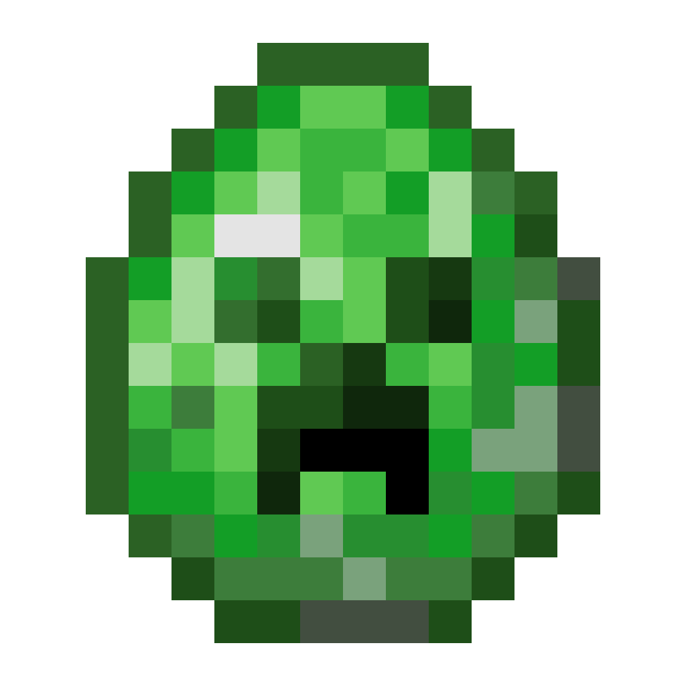
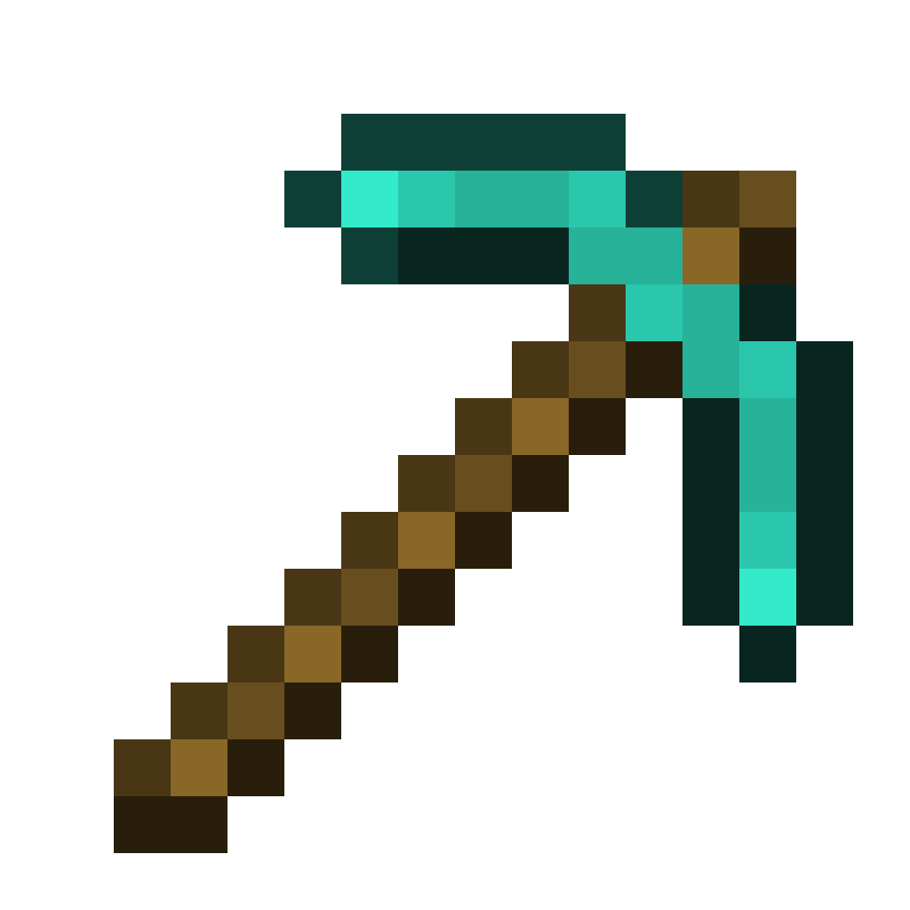
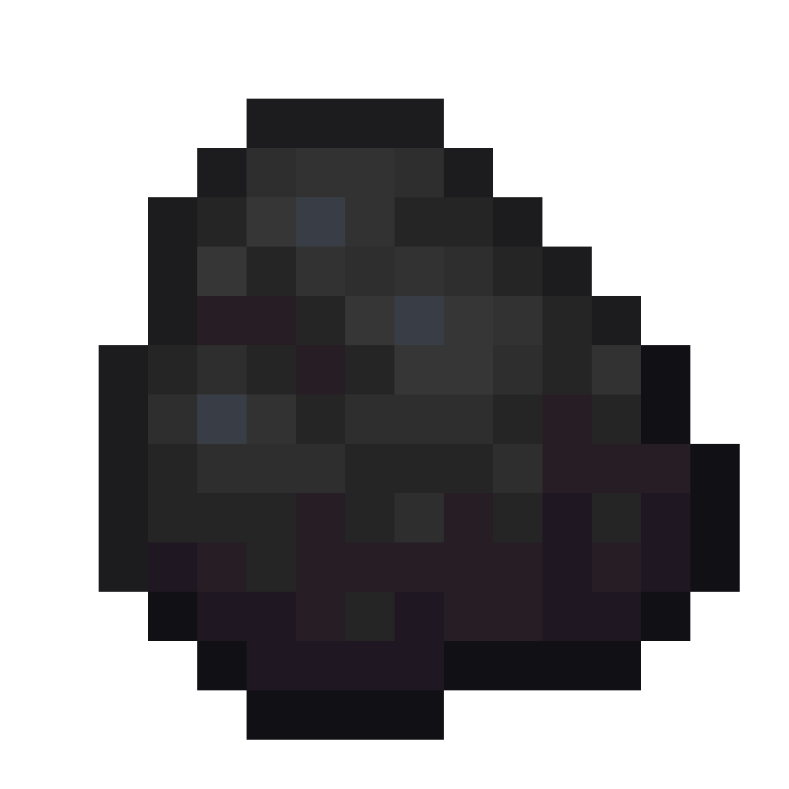
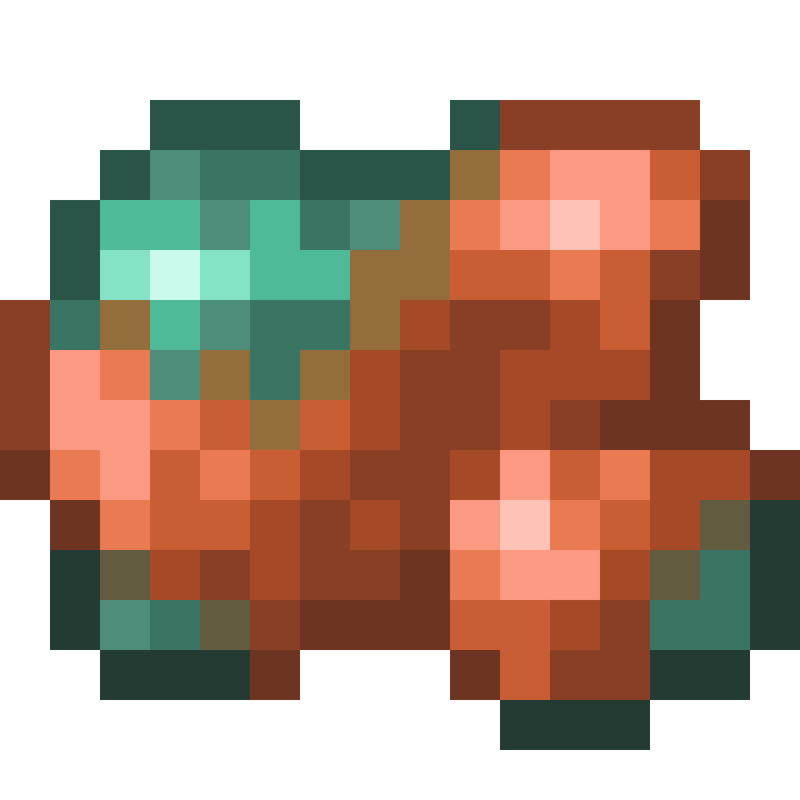
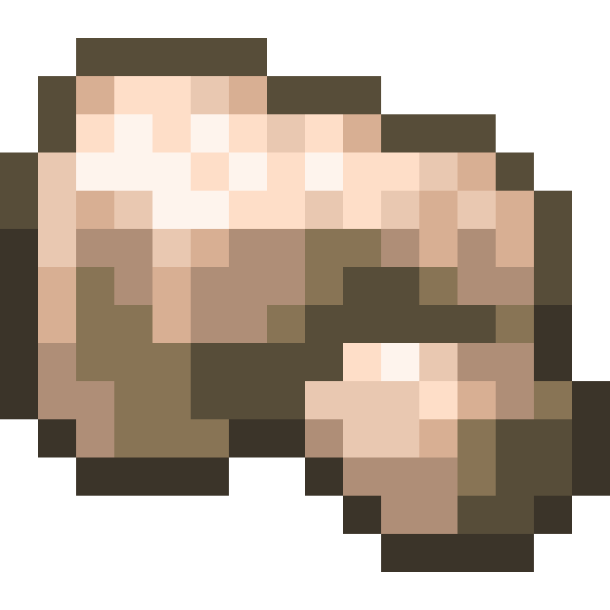
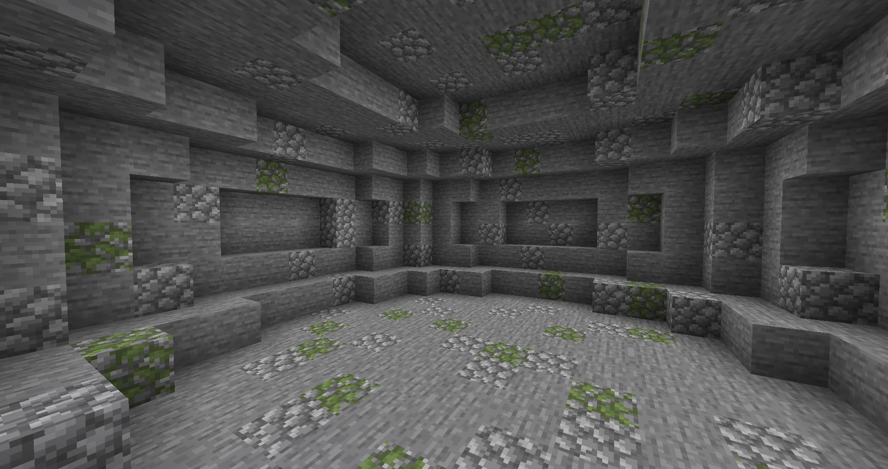
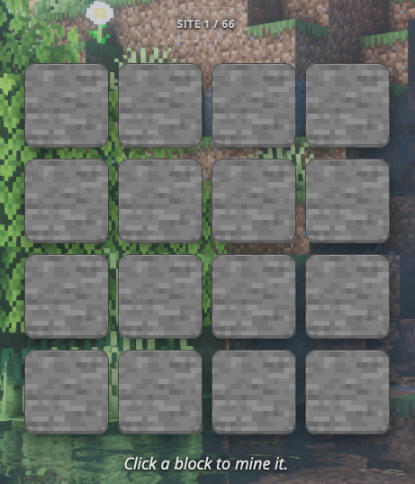
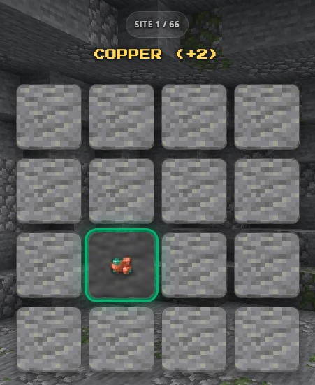
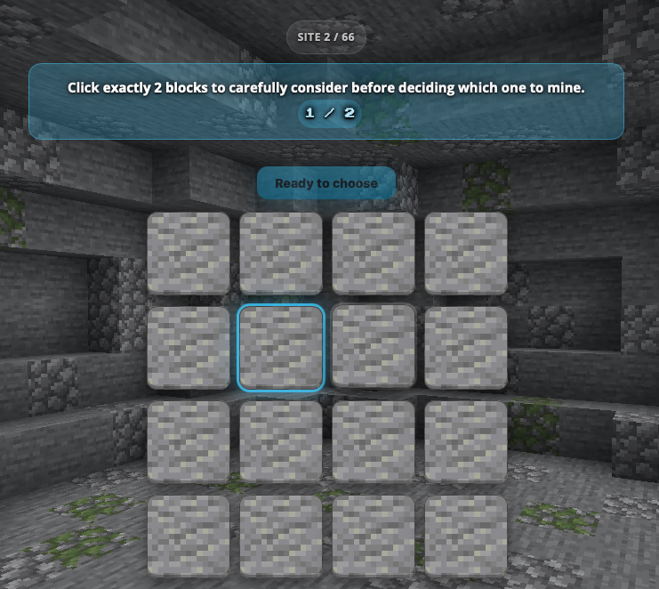

<!DOCTYPE html>
<html>
  <head>
    <title>Minecraft Study</title>
    <meta charset="utf-8">
    <meta name="viewport" content="width=device-width, initial-scale=1, viewport-fit=cover">

    <script src="https://unpkg.com/jspsych@8.2.2"></script>
    <script src="https://unpkg.com/@jspsych/plugin-html-keyboard-response@2.1.0"></script>
    <script src="https://unpkg.com/@jspsych/plugin-survey-likert@2.1.0"></script>
    <script src="https://unpkg.com/@jspsych/plugin-survey-html-form@2.1.0"></script>
    <script src="https://unpkg.com/@jspsych/plugin-instructions@2.1.0"></script>
    <script src="https://unpkg.com/@jspsych/plugin-survey-multi-choice@2.1.0"></script>
    <script src="https://unpkg.com/@jspsych/plugin-html-button-response@2.1.0"></script>
    <script src="https://unpkg.com/@jspsych-contrib/plugin-pipe"></script>
    <link href="https://unpkg.com/jspsych@8.2.2/css/jspsych.css" rel="stylesheet" />
    <link href="https://fonts.googleapis.com/css2?family=Inter:wght@400;600;700;800&family=Press+Start+2P&display=swap" rel="stylesheet">
    <script src="jspsych/consent.js"></script>
    <script src="jspsych/feedback_demographics.js"></script>

    <!-- Roundtable API Script -->
    <script
        src="https://cdn.roundtable.ai/v1/rt.js"
        data-site-key="pub-Mjb3I3iRqxP1fbFGR2hQ">
    </script>
    <!-- End Roundtable API Script -->

    <style>
      :root {
        /* Tile size scales with the smaller viewport dimension so the 4×N grid
           always fits. Caps at 92px on big screens, floors at 44px on phones. */
        --tile-size: clamp(44px, 10.5vmin, 92px);
        --tile-gap: clamp(6px, 1.4vmin, 12px);
        --grid-cols: 4;
        --accent: #ffd84d;
        --accent-strong: #ffb400;
        --cyan: #5bc8ff;
        --bad: #d6336c;
        --good: #27bc6a;
        --ink: #f5f5f7;
        --panel: rgba(20, 22, 30, 0.78);
      }

      html, body {
        margin: 0;
        padding: 0;
        min-height: 100vh;
        background: #0d1018;
        color: var(--ink);
        font-family: 'Inter', system-ui, -apple-system, Segoe UI, Roboto, sans-serif;
        text-align: center;
      }

      /* ---------- Full-screen biome backdrop (applied at body level) ----------
         Paint the biome image directly on the body (with a subtle dark
         gradient on top for text readability). Applying to `body` itself
         rather than `::before` avoids the common pitfall where the pseudo-
         element ends up behind the body's own background. */
      body.biome-overworld,
      body.biome-cave,
      body.biome-deep {
        background-attachment: fixed, fixed, fixed;
        background-size: cover, cover, auto;
        background-position: center, center, center;
        background-repeat: no-repeat, no-repeat, repeat;
        transition: background-image 300ms ease;
      }
      body.biome-overworld {
        background:
          linear-gradient(rgba(5,8,16,0.20), rgba(5,8,16,0.20)) fixed,
          url("img/biome_surface.png") center/cover no-repeat fixed,
          #0d1018;
      }
      body.biome-cave {
        background:
          linear-gradient(rgba(5, 8, 16, 0.20), rgba(5,8,16,0.20)) fixed,
          url("img/biome_cave.png") center/cover no-repeat fixed,
          #0d1018;
      }
      body.biome-deep {
        background:
          linear-gradient(rgba(5,8,16,0.20), rgba(5,8,16,0.20)) fixed,
          url("img/biome_deep.png") center/cover no-repeat fixed,
          #0d1018;
      }

      /* Pure-black backdrop for the pearl rest screen (no biome image). */
      body.pearl-screen,
      html:has(body.pearl-screen) {
        background: #000 !important;
      }
      body.pearl-screen .stage {
        background: transparent;
        border: none;
        box-shadow: none;
      }

      /* ---------- Persistent inventory HUD (always top-right) ---------- */
      #inventory-hud {
        position: fixed;
        top: clamp(8px, 1.6vw, 18px);
        right: clamp(8px, 1.6vw, 18px);
        z-index: 1000;
        display: inline-flex;
        align-items: center;
        gap: clamp(6px, 1vw, 10px);
        padding: clamp(6px, 1.1vw, 10px) clamp(10px, 1.8vw, 16px);
        border-radius: 999px;
        background: var(--panel);
        backdrop-filter: blur(8px);
        border: 1px solid rgba(255,255,255,0.10);
        font-weight: 700;
        font-variant-numeric: tabular-nums;
        box-shadow: 0 10px 24px rgba(0,0,0,0.45);
        max-width: calc(100vw - 24px);
      }
      #inventory-hud img {
        max-width: clamp(16px, 2.4vw, 22px);
        max-height: clamp(16px, 2.4vw, 22px);
        width: auto; height: auto;
        image-rendering: pixelated;
      }
      #inventory-hud .label {
        color: rgba(245,245,247,0.70);
        font-weight: 600;
        font-size: clamp(11px, 1.4vw, 13px);
        letter-spacing: 0.04em;
        text-transform: uppercase;
      }
      #inventory-hud .value { color: var(--accent); font-weight: 800; font-size: clamp(13px, 1.8vw, 16px); }

      .jspsych-display-element { color: var(--ink); }
      .jspsych-content { max-width: min(980px, 96vw); padding: 0 clamp(6px, 1.5vw, 12px); box-sizing: border-box; }

      h1, h2, h3 { color: var(--ink); letter-spacing: -0.01em; }
      p { color: rgba(245,245,247,0.85); }

      .jspsych-btn {
        background: linear-gradient(180deg, #ffd84d, #ffb400);
        color: #1a1300;
        border: none;
        padding: clamp(10px, 1.4vw, 12px) clamp(16px, 2.4vw, 22px);
        font-weight: 800;
        font-size: clamp(13px, 1.8vw, 15px);
        letter-spacing: 0.01em;
        border-radius: 12px;
        box-shadow: 0 8px 22px rgba(255,184,0,0.30), inset 0 -2px 0 rgba(0,0,0,0.18);
        cursor: pointer;
        transition: transform 120ms ease, box-shadow 120ms ease, opacity 120ms ease;
      }
      .jspsych-btn:hover:not(:disabled) {
        transform: translateY(-1px);
        box-shadow: 0 12px 28px rgba(255,184,0,0.42), inset 0 -2px 0 rgba(0,0,0,0.18);
      }
      .jspsych-btn:disabled { opacity: 0.45; cursor: not-allowed; }

      .commit-btn {
        margin-top: 16px;
        padding: 10px 20px;
        border: none;
        border-radius: 12px;
        background: linear-gradient(180deg, #5bc8ff, #2a9cd9);
        color: #061520;
        font-weight: 800;
        font-size: 14px;
        cursor: pointer;
        box-shadow: 0 8px 22px rgba(91,200,255,0.35);
      }
      .commit-btn:disabled { opacity: 0.4; cursor: not-allowed; }

      /* ---------- Uniform content stage ----------
         The biome image lives on the body (full-screen, fixed) and we let it
         show through this container — the stage is now just a sized frame. */
      .stage {
        position: relative;
        width: min(920px, 94vw);
        min-height: min(620px, 82vh);
        margin: clamp(12px, 2.2vh, 24px) auto;
        padding: clamp(18px, 3.2vw, 36px) clamp(16px, 3vw, 32px);
        border-radius: clamp(14px, 2vw, 22px);
        display: flex;
        flex-direction: column;
        align-items: center;
        justify-content: center;
        box-sizing: border-box;
        background: transparent;
        border: 1px solid rgba(255,255,255,0.10);
        box-shadow: 0 24px 60px rgba(0,0,0,0.65);
      }
      .stage > * { position: relative; z-index: 2; }
      /* legacy biome classes on .stage: kept for the pickaxe cursor selector; no bg. */

      /* Text readability over biome imagery — applied inside any stage. */
      .stage h1, .stage h2, .stage h3, .stage h4,
      .stage p, .stage .round-tag, .stage .outcome-headline,
      .stage .biome-name, .stage .biome-rate,
      .stage #choice-hint, .stage #consider-banner {
        text-shadow:
          0 1px 2px rgba(0,0,0,0.95),
          0 0 6px rgba(0,0,0,0.75),
          0 0 14px rgba(0,0,0,0.55);
      }
      .stage #choice-hint b, .stage #consider-banner b,
      .stage .biome-rate b, .stage p b { color: #fff; }

      .roulette-grid {
        display: grid;
        grid-template-columns: repeat(var(--grid-cols), var(--tile-size));
        grid-gap: var(--tile-gap);
        justify-content: center;
        margin: 14px auto 6px;
      }

      /* Pickaxe cursor — inline SVG so the browser accepts it at 28px.
         Shape: diamond-ish head in upper-left, wooden handle extending to lower-right.
         Hotspot (3,3) = pickaxe tip. */
      .stage.mining, .stage.mining * {
        cursor:
          url("data:image/svg+xml;charset=utf-8,%3Csvg xmlns='http://www.w3.org/2000/svg' width='28' height='28' viewBox='0 0 28 28'%3E%3Cg stroke='%23111' stroke-width='1.2' stroke-linejoin='round' stroke-linecap='round'%3E%3Cpath d='M2 7 L7 2 L14 9 L9 14 Z' fill='%23c9ced6'/%3E%3Cpath d='M4 5 L7 2 L10 5 L7 8 Z' fill='%23e6eaef'/%3E%3Cline x1='9' y1='9' x2='25' y2='25' stroke='%236a3d18' stroke-width='3.4'/%3E%3Cline x1='11' y1='11' x2='24' y2='24' stroke='%238a5a2b' stroke-width='1.4'/%3E%3C/g%3E%3C/svg%3E") 3 3,
          pointer;
      }

      .roulette-number {
        width: var(--tile-size);
        height: var(--tile-size);
        position: relative;
        user-select: none;

        border-radius: 12px;
        border: 1px solid rgba(0,0,0,0.45);
        box-shadow:
          0 8px 18px rgba(0,0,0,0.45),
          inset 0 -3px 0 rgba(0,0,0,0.25),
          inset 0 1px 0 rgba(255,255,255,0.06);
        transition: transform 120ms ease, box-shadow 120ms ease, border-color 120ms ease;

        background-image: url("img/stone.png");
        background-size: cover;
        background-position: center;
        image-rendering: pixelated;
      }
      .roulette-number.andesite-bg { background-image: url("img/andesite.png"); }
      .roulette-number.deep-bg     { background-image: url("img/deep.png"); }

      .roulette-number:hover {
        transform: translateY(-2px);
        box-shadow:
          0 14px 26px rgba(0,0,0,0.55),
          inset 0 -3px 0 rgba(0,0,0,0.25),
          0 0 0 2px rgba(255,255,255,0.18);
      }
      .roulette-number.disabled { pointer-events: none; opacity: 0.92; }

      .tile-num {
        position: absolute;
        top: 6px; left: 6px;
        font-family: 'Press Start 2P', monospace;
        font-size: 9px;
        line-height: 1;
        color: rgba(255,255,255,0.95);
        text-shadow: 0 2px 0 rgba(0,0,0,0.85);
        padding: 4px 5px;
        border-radius: 5px;
        background: rgba(0,0,0,0.45);
        border: 1px solid rgba(255,255,255,0.10);
      }

      /* salience: glow + sparkle */
      .roulette-number.highlight {
        animation: glowPulse 1.6s ease-in-out infinite;
      }
      .roulette-number.highlight::before {
        content: "✦";
        position: absolute;
        top: 4px; right: 6px;
        font-size: 18px;
        color: #ffe066;
        text-shadow: 0 0 6px #ffe066, 0 0 14px rgba(255,224,102,0.7);
        animation: sparkle 1.2s ease-in-out infinite;
      }
      @keyframes glowPulse {
        0%,100% { box-shadow: 0 0 0 3px rgba(255,224,102,0.55), 0 0 22px rgba(255,224,102,0.55); }
        50%     { box-shadow: 0 0 0 4px rgba(255,224,102,0.85), 0 0 32px rgba(255,224,102,0.85); }
      }
      @keyframes sparkle {
        0%,100% { transform: scale(1); opacity: 1; }
        50%     { transform: scale(1.25); opacity: 0.7; }
      }

      /* salience: considered (cyan) */
      .roulette-number.considered {
        box-shadow:
          0 0 0 3px rgba(91,200,255,0.80),
          0 0 22px rgba(91,200,255,0.55),
          inset 0 -3px 0 rgba(0,0,0,0.25);
      }

      /* chosen tile (counterfactual view only) — green outline, no label. */
      .roulette-number.chosen {
        outline: 3px solid var(--good);
        outline-offset: 3px;
        box-shadow:
          0 0 0 4px rgba(47,191,113,0.45),
          0 0 28px rgba(47,191,113,0.65),
          inset 0 -3px 0 rgba(0,0,0,0.25);
        z-index: 3;
      }

      .roulette-number.cracking::after {
        content: "";
        position: absolute; inset: 0;
        border-radius: 12px;
        background:
          repeating-linear-gradient(45deg, transparent 0 6px, rgba(0,0,0,0.20) 6px 7px),
          repeating-linear-gradient(-45deg, transparent 0 9px, rgba(0,0,0,0.16) 9px 10px);
        animation: crackFlicker 0.35s steps(2) infinite;
        pointer-events: none;
      }
      @keyframes crackFlicker {
        0%,100% { opacity: 0.65; }
        50%     { opacity: 1.0; }
      }

      .tile-content {
        position: absolute; inset: 0;
        display: flex; align-items: center; justify-content: center; gap: 2px;
        background: rgba(0,0,0,0.45);
        border-radius: 12px;
        backdrop-filter: blur(2px);
      }
      .tile-content img {
        max-width: min(32px, 48%); max-height: min(32px, 48%);
        width: auto; height: auto;
        image-rendering: pixelated;
        filter: drop-shadow(0 2px 3px rgba(0,0,0,0.6));
        flex-shrink: 0;
      }
      .tile-content .none {
        font-size: clamp(18px, 4vmin, 28px);
        opacity: 0.55;
        color: #fff;
      }

      /* ---------- HUD ---------- */
      .hud {
        display: inline-flex;
        align-items: center;
        gap: 10px;
        padding: 8px 14px;
        margin: 8px 6px 16px;
        border-radius: 999px;
        background: var(--panel);
        backdrop-filter: blur(6px);
        border: 1px solid rgba(255,255,255,0.08);
        font-weight: 700;
        font-variant-numeric: tabular-nums;
      }
      .hud img {
        max-width: 22px; max-height: 22px;
        width: auto; height: auto;
        image-rendering: pixelated;
      }
      .hud .label { color: rgba(245,245,247,0.65); font-weight: 600; }
      .hud .value { color: var(--accent); font-weight: 800; }

      .round-tag {
        display: inline-block;
        padding: 4px 12px;
        border-radius: 999px;
        background: rgba(255,255,255,0.08);
        border: 1px solid rgba(255,255,255,0.12);
        font-size: 12px;
        font-weight: 700;
        letter-spacing: 0.04em;
        text-transform: uppercase;
        color: rgba(245,245,247,0.75);
      }

      .biome-cue {
        max-width: min(640px, 92vw);
        margin: clamp(18px, 5vh, 50px) auto;
        padding: clamp(12px, 2vw, 18px);
        border-radius: clamp(14px, 2vw, 22px);
        background: var(--panel);
        border: 1px solid rgba(255,255,255,0.08);
        box-shadow: 0 24px 60px rgba(0,0,0,0.55);
        box-sizing: border-box;
      }
      .biome-cue img {
        display: block;
        margin: 0 auto clamp(10px, 1.6vw, 14px);
        width: min(640px, 84vw);
        max-height: 42vh;
        object-fit: cover;
        height: auto;
        border-radius: clamp(12px, 2vw, 20px);
        box-shadow: 0 16px 40px rgba(0,0,0,0.60);
      }
      .biome-cue .biome-name {
        font-family: 'Press Start 2P', monospace;
        font-size: clamp(15px, 3vw, 22px);
        color: var(--accent);
        letter-spacing: 0.02em;
      }
      .biome-cue .biome-rate {
        font-size: clamp(13px, 1.9vw, 16px);
        margin-top: clamp(6px, 1vw, 10px);
        color: rgba(245,245,247,0.78);
      }

      /* Just the pearl — no stone/andesite/deepslate tile behind it. */
      .fixation-block {
        width: clamp(72px, 18vmin, 120px);
        height: clamp(72px, 18vmin, 120px);
        background-image: url("img/pearl.png");
        background-size: contain;
        background-repeat: no-repeat;
        background-position: center;
        image-rendering: pixelated;
        filter: drop-shadow(0 6px 14px rgba(0,0,0,0.55));
      }
      /* legacy biome-variant classes kept as no-ops for backwards compat */
      .fixation-block.andesite,
      .fixation-block.deep { background-image: url("img/pearl.png"); }

      .teleporting-label {
        margin-top: clamp(14px, 2.4vw, 22px);
        font-family: 'Press Start 2P', monospace;
        font-size: clamp(12px, 1.8vw, 16px);
        letter-spacing: 0.08em;
        color: rgba(245,245,247,0.85);
        text-shadow:
          0 1px 2px rgba(0,0,0,0.95),
          0 0 6px rgba(0,0,0,0.75);
        animation: teleportPulse 1.4s ease-in-out infinite;
      }
      @keyframes teleportPulse {
        0%,100% { opacity: 0.55; }
        50%     { opacity: 1; }
      }

      .instr-wrap {
        max-width: min(760px, 94vw);
        margin: 0 auto;
        padding: clamp(14px, 2.4vw, 20px);
        background: var(--panel);
        border-radius: clamp(14px, 2vw, 22px);
        border: 1px solid rgba(255,255,255,0.08);
        box-shadow: 0 24px 60px rgba(0,0,0,0.55);
        box-sizing: border-box;
      }
      .instr-hero {
        display: block;
        width: min(220px, 45vw);
        max-height: 32vh;
        object-fit: contain;
        height: auto;
        margin: 0 auto clamp(10px, 1.6vw, 14px);
        border-radius: 14px;
        image-rendering: pixelated;
      }
      .instr-title {
        font-family: 'Press Start 2P', monospace;
        font-size: clamp(14px, 2.6vw, 18px);
        color: var(--accent);
        letter-spacing: 0.02em;
        margin: 6px 0 clamp(10px, 1.6vw, 14px);
      }
      .instr-text { font-size: clamp(14px, 1.9vw, 16px); line-height: 1.6; color: rgba(245,245,247,0.88); }
      .instr-text p { margin: clamp(8px, 1.2vw, 10px) auto; max-width: min(640px, 92%); }
      .instr-list {
        display: inline-block; text-align: left;
        margin: 12px auto 0; padding-left: 22px;
        max-width: min(640px, 92%);
      }
      .instr-list li { margin: 8px 0; }
      .instr-note {
        margin: clamp(12px, 2vw, 16px) auto 0;
        max-width: min(640px, 92%);
        padding: clamp(10px, 1.5vw, 12px) clamp(12px, 1.8vw, 14px);
        border-radius: 12px;
        border: 1px solid rgba(255,216,77,0.35);
        background: rgba(255,216,77,0.10);
        color: var(--accent);
        font-weight: 600;
      }

      #consider-banner {
        max-width: min(640px, 92%);
        margin: 0 auto clamp(10px, 1.6vw, 14px);
        padding: clamp(10px, 1.5vw, 12px) clamp(12px, 1.8vw, 14px);
        text-align: center;
        border-radius: 14px;
        background: rgba(91,200,255,0.25);
        border: 1px solid rgba(91,200,255,0.45);
        color: var(--ink);
        font-weight: 700;
        font-size: clamp(13px, 1.8vw, 15px);
      }
      #consider-banner .count-pill {
        display: inline-block;
        margin-left: 8px;
        padding: 2px 8px;
        border-radius: 999px;
        background: rgba(91,200,255,0.25);
        color: #bfeaff;
        font-variant-numeric: tabular-nums;
        font-family: 'Press Start 2P', monospace;
        font-size: 11px;
      }

      .regret-card {
        max-width: min(640px, 100%);
        margin: clamp(16px, 2.4vw, 24px) auto 0;
        padding: clamp(14px, 2.4vw, 24px);
        text-align: left;
        background: var(--panel);
        border: 1px solid rgba(255,255,255,0.08);
        border-radius: clamp(12px, 1.8vw, 18px);
        box-shadow: 0 18px 40px rgba(0,0,0,0.65);
        box-sizing: border-box;
      }
      .regret-title {
        margin: 0 0 clamp(8px, 1.4vw, 12px);
        font-family: 'Press Start 2P', monospace;
        font-size: clamp(13px, 2.2vw, 16px);
        color: var(--accent);
      }
      .regret-meta {
        margin: 0 0 16px;
        color: rgba(245,245,247,0.78);
        line-height: 1.5;
      }
      .regret-item {
        padding: 16px;
        border-radius: 12px;
        background: rgba(255,255,255,0.04);
        border: 1px solid rgba(255,255,255,0.08);
        margin: 12px 0;
      }
      .regret-prompt { margin: 0 0 12px; font-weight: 600; line-height: 1.4; color: var(--ink); }
      .regret-row { display: flex; gap: 12px; align-items: center; }
      .regret-value-pill {
        min-width: 60px; padding: 8px 12px; border-radius: 999px;
        text-align: center; font-variant-numeric: tabular-nums; font-weight: 800;
        background: rgba(255,216,77,0.18);
        border: 1px solid rgba(255,216,77,0.40);
        color: var(--accent);
      }
      .regret-ends {
        display: flex; justify-content: space-between;
        margin-top: 8px; font-size: 12px;
        color: rgba(245,245,247,0.55);
      }
      .regret-hint {
        margin-top: 14px;
        font-size: 13px;
        color: rgba(245,245,247,0.55);
      }
      .regret-range {
        -webkit-appearance: none; appearance: none;
        width: 100%; height: 6px; border-radius: 999px;
        background: rgba(255,255,255,0.18);
        outline: none;
      }
      .regret-range::-webkit-slider-thumb {
        -webkit-appearance: none; appearance: none;
        width: 20px; height: 20px; border-radius: 50%;
        background: var(--accent);
        border: 2px solid #1a1300;
        box-shadow: 0 6px 14px rgba(0,0,0,0.4);
        cursor: pointer;
        opacity: 1;
        transition: opacity 120ms ease;
      }
      .regret-range::-moz-range-thumb {
        width: 20px; height: 20px; border-radius: 50%;
        background: var(--accent);
        border: 2px solid #1a1300;
        box-shadow: 0 6px 14px rgba(0,0,0,0.4);
        cursor: pointer;
        opacity: 1;
        transition: opacity 120ms ease;
      }
      /* Hide thumb (and value pill) until the participant actually interacts
         with the track — so the slider starts visually "empty". */
      .regret-range[data-moved="0"]::-webkit-slider-thumb {
        opacity: 0;
        background: transparent;
        border-color: transparent;
        box-shadow: none;
      }
      .regret-range[data-moved="0"]::-moz-range-thumb {
        opacity: 0;
        background: transparent;
        border-color: transparent;
        box-shadow: none;
      }
      .regret-range[data-moved="0"] + .regret-value-pill { visibility: hidden; }

      .outcome-icons {
        display: flex;
        gap: clamp(6px, 1.2vw, 10px);
        justify-content: center;
        margin: clamp(14px, 2.6vw, 22px) 0;
        flex-wrap: wrap;
      }
      .outcome-icons img {
        max-width: clamp(40px, 8vmin, 64px);
        max-height: clamp(40px, 8vmin, 64px);
        width: auto; height: auto;
        image-rendering: pixelated;
        filter: drop-shadow(0 6px 12px rgba(0,0,0,0.6));
      }
      .outcome-headline {
        font-family: 'Press Start 2P', monospace;
        font-size: clamp(13px, 2.2vw, 16px);
        margin: 0 0 6px;
        letter-spacing: 0.02em;
      }

      /* ---------- Viewport-specific tweaks ---------- */
      /* Narrow screens (phones / tight windows): tighten spacing + let the
         stage grow with content rather than enforce a tall minimum. */
      @media (max-width: 640px) {
        :root {
          --tile-size: clamp(42px, 18vw, 68px);
          --tile-gap: 6px;
        }
        .stage {
          width: 100vw;
          margin: 8px auto;
          padding: 14px 12px;
          border-radius: 14px;
          min-height: auto;
        }
        .jspsych-content { padding: 0 4px; }
        #inventory-hud { font-size: 12px; padding: 5px 10px; gap: 6px; }
        #inventory-hud .label { font-size: 10px; }
        #inventory-hud .value { font-size: 12px; }
        .tile-num { font-size: 7px; padding: 3px 4px; }
      }
      /* Short viewports (landscape phones, small laptop heights): avoid tall
         min-height so scrolling isn't forced. */
      @media (max-height: 720px) {
        .stage { min-height: auto; }
        .biome-cue { margin: 16px auto; }
        .biome-cue img { max-height: 38vh; }
      }
      @media (max-height: 520px) {
        :root {
          --tile-size: clamp(40px, 11vh, 64px);
          --tile-gap: 6px;
        }
        .stage { padding: 10px 14px; }
        .fixation-block {
          width: clamp(56px, 14vh, 100px);
          height: clamp(56px, 14vh, 100px);
        }
      }
    </style>
  </head>

  <body></body>

  <script>
    /**********************************
     Prolific and DataPipe integration
       - Set DATAPIPE_EXPERIMENT_ID to the ID shown on your DataPipe dashboard
         (https://pipe.jspsych.org → your experiment → "Experiment ID").
       - Set PROLIFIC_COMPLETION_CODE to the code Prolific gave you for this study.
       - Make sure your DataPipe experiment has "Data collection" enabled, and
         (during piloting) is in OSF or "Open" mode so saves go through.
    ***********************************/
    const DATAPIPE_EXPERIMENT_ID = "Ci8MtvcEm02R";          
    const PROLIFIC_COMPLETION_CODE = "CF6UBDAN";       

    const urlParams = new URLSearchParams(window.location.search);
    const PROLIFIC_PID = urlParams.get("PROLIFIC_PID") || "NA";
    const STUDY_ID = urlParams.get("STUDY_ID") || "NA";
    const SESSION_ID = urlParams.get("SESSION_ID") || "NA";

    // Bypass the DataPipe write entirely when running from file:// or when
    // ?debug=1 is in the URL. The CSV is then offered as a local download.
    const IS_DEBUG_RUN =
      urlParams.has("debug") ||
      window.location.protocol === "file:" ||
      DATAPIPE_EXPERIMENT_ID === "REPLACE_ME";

    const PROLIFIC_COMPLETE_URL =
      "https://app.prolific.com/submissions/complete?cc=" +
      encodeURIComponent("CF6UBDAN");

    if (DATAPIPE_EXPERIMENT_ID === "REPLACE_ME") {
      console.warn(
        "[DataPipe] DATAPIPE_EXPERIMENT_ID is still 'REPLACE_ME'. " +
        "Running in debug mode: data will be offered as a local CSV download " +
        "instead of being saved to DataPipe."
      );
    }

    const jsPsych = initJsPsych();

    /**********************************
     Persistent Inventory HUD (fixed top-right, always visible) +
     body-level biome class helper.
    ***********************************/
    let inventoryHudEl = null;
    function ensureInventoryHud() {
      if (inventoryHudEl) return inventoryHudEl;
      inventoryHudEl = document.createElement("div");
      inventoryHudEl.id = "inventory-hud";
      inventoryHudEl.innerHTML = `
        
        <span class="label">XP</span>
        <span class="value" id="inventory-hud-value">0</span>
      `;
      document.body.appendChild(inventoryHudEl);
      return inventoryHudEl;
    }
    function updateInventoryHud(value) {
      ensureInventoryHud();
      const el = document.getElementById("inventory-hud-value");
      if (el) el.textContent = String(value);
    }
    function setBodyBiome(biomeKey) {
      document.body.classList.remove("biome-overworld", "biome-cave", "biome-deep");
      if (biomeKey && BIOMES[biomeKey]) document.body.classList.add(BIOMES[biomeKey].cls);
    }
    // Create the HUD as soon as body is available
    if (document.body) ensureInventoryHud();
    else document.addEventListener("DOMContentLoaded", ensureInventoryHud);

    jsPsych.data.addProperties({
      participant_id: PROLIFIC_PID,
      prolific_pid: PROLIFIC_PID,
      prolific_study_id: STUDY_ID,
      prolific_session_id: SESSION_ID,
      date_iso: new Date().toISOString()
    });

    /**********************************
     Design parameters
    ***********************************/
    const GRID_COLS = 4;
    const GRID_ROWS = 4;
    const GRID_N = GRID_COLS * GRID_ROWS;
    const NUMBERS = Array.from({ length: GRID_N }, (_, i) => i + 1);

    /* Ore tiers — value in points. Creepers cost points based on severity (1-4). */
    const ORES = {
      coal:    { value: 1, img: "img/coal.png",    label: "coal"    },
      copper:  { value: 2, img: "img/copper.png",  label: "copper"  },
      iron:    { value: 3, img: "img/iron.png",    label: "iron"    },
      diamond: { value: 4, img: "img/diamond.png", label: "diamond" }
    };
    const ORE_KINDS = ["coal", "copper", "iron", "diamond"];
    const EMPTY_KIND = "none";

    /* Biomes differ in overall richness, and rows differ in expected value.
      Lower rows are better on average than higher rows in every biome.
      Creeper probability is constant across the grid so biome mainly reflects
      ore richness rather than danger. */
    const BIOMES = {
      overworld: {
        label: "Overworld",
        cls: "biome-overworld",
        img: "img/biome_surface.png",
        mean_ore_value: 1.45,
        certainty: "low",
        bg: "stone"
      },
      cave: {
        label: "Cave",
        cls: "biome-cave",
        img: "img/biome_cave.png",
        mean_ore_value: 2.35,
        certainty: "mid",
        bg: "andesite"
      },
      deep: {
        label: "Deep Cave",
        cls: "biome-deep",
        img: "img/biome_deep.png",
        mean_ore_value: 3.05,
        certainty: "high",
        bg: "deep"
      }
    };

    const ROW_OUTCOME_DISTS = {
      overworld: [
        { none: 0.60, coal: 0.28, copper: 0.08, iron: 0.03, diamond: 0.01 },
        { none: 0.52, coal: 0.26, copper: 0.12, iron: 0.07, diamond: 0.03 },
        { none: 0.44, coal: 0.22, copper: 0.14, iron: 0.12, diamond: 0.08 },
        { none: 0.34, coal: 0.16, copper: 0.16, iron: 0.16, diamond: 0.18 }
      ],
      cave: [
        { none: 0.52, coal: 0.20, copper: 0.14, iron: 0.09, diamond: 0.05 },
        { none: 0.44, coal: 0.16, copper: 0.16, iron: 0.14, diamond: 0.10 },
        { none: 0.36, coal: 0.12, copper: 0.16, iron: 0.18, diamond: 0.18 },
        { none: 0.28, coal: 0.08, copper: 0.14, iron: 0.22, diamond: 0.28 }
      ],
      deep: [
        { none: 0.42, coal: 0.10, copper: 0.16, iron: 0.18, diamond: 0.14 },
        { none: 0.36, coal: 0.08, copper: 0.14, iron: 0.20, diamond: 0.22 },
        { none: 0.30, coal: 0.06, copper: 0.12, iron: 0.20, diamond: 0.32 },
        { none: 0.24, coal: 0.04, copper: 0.10, iron: 0.20, diamond: 0.42 }
      ]
    };

    /* Creepers removed from the task. Kept the rate constant + dead code paths
       so the schema (outcome_kind, creeper_severity) stays stable, but
       sampleRowContent will never actually emit a creeper. */
    const CREEPER_RATE = 0;

    /* Feedback: all non-salient trials are partial; salient trials can be partial or full. */
    const FEEDBACK_TYPES = ["full", "partial"];

    /* Salience magnitude: none = 0 blocks, little = 2 blocks, a_lot = 8 blocks.
       Salience mode is always "consider" (highlight mode removed). */
    const SALIENCE_TYPES   = ["none", "little", "a_lot"];
    const SALIENCE_COUNTS  = { none: 0, little: 2, a_lot: 8 };

    /* On full-feedback salient trials, the revealed counterfactual blocks should
      be uniformly directional relative to the chosen block: either every revealed
      block is better than the chosen block, or every revealed block is worse.
      We keep the historical comparison labels for logging compatibility:
        - "bad_to_good" = all revealed alternatives are better than the chosen block
        - "good_to_bad" = all revealed alternatives are worse than the chosen block */
    const COMPARISON_TYPES = ["good_to_bad", "bad_to_good"];

    /* Fully crossed design: 3 biomes × 2 feedback levels × 3 salience configurations
      (none, little-consider, a_lot-consider) = 18 cells. Each cell is repeated 4× = 72,
      and we drop one rep per (biome × feedback) group (6 drops) so biome and feedback
      stay perfectly balanced at 22-per-biome and 11-per-feedback-within-biome,
      yielding 66 trials overall. */
    const TARGET_TOTAL_TRIALS = 66;

    const BIOME_CUE_MS         = 3000;
    const PRE_ITI_MIN_MS       = 4000;
    const PRE_ITI_MAX_MS       = 5000;
    const ANTICIPATION_MS      = 2000;
    const COUNTERFACTUAL_MS    = 5000;
    const POST_ITI_MIN_MS      = 4000;
    const POST_ITI_MAX_MS      = 5000;
    const BLOCK_SIZE           = 18;

    function jitter(min, max) { return Math.floor(min + Math.random() * (max - min)); }

    /**********************************
     Grid geometry + adjacency
    ***********************************/
    function blockRC(n) { return { row: Math.floor((n - 1) / GRID_COLS), col: (n - 1) % GRID_COLS }; }
    function neighborsOf(n) {
      const { row, col } = blockRC(n);
      const out = [];
      [[-1,0],[1,0],[0,-1],[0,1]].forEach(([dr, dc]) => {
        const r = row + dr, c = col + dc;
        if (r >= 0 && r < GRID_ROWS && c >= 0 && c < GRID_COLS) {
          out.push(r * GRID_COLS + c + 1);
        }
      });
      return out;
    }
    function areAdjacent(a, b) { return neighborsOf(a).includes(b); }

    // Random connected cluster of orthogonally adjacent blocks
    function sampleAdjacentCluster(size) {
      const start = NUMBERS[Math.floor(Math.random() * NUMBERS.length)];
      const cluster = new Set([start]);
      while (cluster.size < size) {
        const frontier = [];
        cluster.forEach(n => neighborsOf(n).forEach(m => { if (!cluster.has(m)) frontier.push(m); }));
        if (frontier.length === 0) break;
        const pick = frontier[Math.floor(Math.random() * frontier.length)];
        cluster.add(pick);
      }
      return Array.from(cluster).sort((a, b) => a - b);
    }

    // Sparse set: no two blocks orthogonally adjacent
    function sampleSparseSet(size) {
      const pool = jsPsych.randomization.shuffle(NUMBERS.slice());
      const chosen = [];
      for (const n of pool) {
        if (chosen.every(c => !areAdjacent(c, n))) {
          chosen.push(n);
          if (chosen.length === size) break;
        }
      }
      // if grid too small to fit, fall back to first-fit
      while (chosen.length < size) {
        const missing = NUMBERS.find(n => !chosen.includes(n));
        if (missing === undefined) break;
        chosen.push(missing);
      }
      return chosen.sort((a, b) => a - b);
    }

    /**********************************
     Build factorial trial list + tally
    ***********************************/
    /* Build a fully crossed trial list across:
        - biome: overworld, cave, deep
        - feedback: partial, full
        - salience configuration: none, little-consider, a_lot-consider
      This yields 18 unique cells. Each is repeated 4 times (72 total). For each
      (biome × feedback) group we then drop one trial from a randomly chosen
      salience cell, removing 6 trials to land at 66. Biome (22 each) and
      feedback-within-biome (11 partial / 11 full) remain perfectly balanced. */
    function buildTrialList() {
      const baseCells = [];

      Object.keys(BIOMES).forEach((biome) => {
        FEEDBACK_TYPES.forEach((feedback) => {
          baseCells.push({
            biome,
            feedback,
            salience: "none",
            salience_mode: null,
            comparison_type: null,
            forced_creeper_trial: false
          });

          ["little", "a_lot"].forEach((salience) => {
            baseCells.push({
              biome,
              feedback,
              salience,
              salience_mode: "consider",
              comparison_type: null,
              forced_creeper_trial: false
            });
          });
        });
      });

      let cells = [];
      for (let r = 0; r < 4; r++) {
        cells = cells.concat(baseCells.map((c) => ({ ...c })));
      }

      // Drop one rep per (biome × feedback) group to land at TARGET_TOTAL_TRIALS,
      // keeping biome and feedback counts perfectly balanced.
      const salienceLevels = ["none", "little", "a_lot"];
      Object.keys(BIOMES).forEach((biome) => {
        FEEDBACK_TYPES.forEach((feedback) => {
          const target = salienceLevels[Math.floor(Math.random() * salienceLevels.length)];
          const idx = cells.findIndex((c) =>
            c.biome === biome && c.feedback === feedback && c.salience === target
          );
          if (idx !== -1) cells.splice(idx, 1);
        });
      });

      // Pre-assign comparison_type across the full-feedback consider trials so
      // exactly NUM_GOOD_TO_BAD of them are "good_to_bad" (chosen outcome is
      // better than all revealed CFs); the rest are "bad_to_good" (chosen is
      // worse than all revealed CFs). Anticipation step honors cell.comparison_type
      // when set, so this drives the directional CF board generator.
      const directionalIdxs = cells
        .map((c, i) => (c.feedback === "full" && c.salience !== "none") ? i : -1)
        .filter((i) => i >= 0);
      const shuffledDirectional = jsPsych.randomization.shuffle(directionalIdxs);
      const NUM_GOOD_TO_BAD = Math.min(12, shuffledDirectional.length);
      shuffledDirectional.forEach((idx, j) => {
        cells[idx].comparison_type = j < NUM_GOOD_TO_BAD ? "good_to_bad" : "bad_to_good";
      });

      return jsPsych.randomization.shuffle(cells);
    }

    function tallyTrialList(list) {
      const cellCounts = {};
      const byFactor = { biome: {}, feedback: {}, salience: {}, salience_mode: {}, comparison_type: {} };
      list.forEach((c) => {
        const modeKey = c.salience_mode || "n/a";
        const cmpKey = c.comparison_type || "n/a";
        const key = `${c.biome} | ${c.feedback} | ${c.salience} (${modeKey}) | ${cmpKey}`;
        cellCounts[key] = (cellCounts[key] || 0) + 1;
        byFactor.biome[c.biome]             = (byFactor.biome[c.biome] || 0) + 1;
        byFactor.feedback[c.feedback]       = (byFactor.feedback[c.feedback] || 0) + 1;
        byFactor.salience[c.salience]       = (byFactor.salience[c.salience] || 0) + 1;
        byFactor.salience_mode[modeKey]     = (byFactor.salience_mode[modeKey] || 0) + 1;
        byFactor.comparison_type[cmpKey]    = (byFactor.comparison_type[cmpKey] || 0) + 1;
      });
      console.group("Trial list tally (" + list.length + " total trials)");
      console.log("By biome:",         byFactor.biome);
      console.log("By feedback:",      byFactor.feedback);
      console.log("By salience:",      byFactor.salience);
      console.log("By salience mode:", byFactor.salience_mode);
      console.log("By comparison type:", byFactor.comparison_type);
      console.log("Per-cell counts:");
      console.table(cellCounts);
      console.groupEnd();
      return { cellCounts, byFactor };
    }

    let trialOrder = buildTrialList();
    const trialTally = tallyTrialList(trialOrder);
    // also stash tally into the jsPsych data for the record
    jsPsych.data.addProperties({
      tally_total: trialOrder.length,
      tally_by_biome:         JSON.stringify(trialTally.byFactor.biome),
      tally_by_feedback:      JSON.stringify(trialTally.byFactor.feedback),
      tally_by_salience:      JSON.stringify(trialTally.byFactor.salience),
      tally_by_salience_mode: JSON.stringify(trialTally.byFactor.salience_mode),
      tally_by_comparison_type: JSON.stringify(trialTally.byFactor.comparison_type)
    });

    let wallet = 0;

    /**********************************
     Rendering helpers
    ***********************************/
    function makeGrid(opts) {
      const {
        biomeBg = "stone",
        highlightSet = [],
        consideredSet = [],
        disabledSet = [],
        chosenBlock = null,
        revealMap = null
      } = opts || {};

      let html = `<div class='roulette-grid'>`;
      NUMBERS.forEach((n) => {
        const classes = ["roulette-number"];
        if (biomeBg === "deep")     classes.push("deep-bg");
        if (biomeBg === "andesite") classes.push("andesite-bg");
        if (highlightSet.includes(n))   classes.push("highlight");
        if (consideredSet.includes(n))  classes.push("considered");
        if (disabledSet.includes(n))    classes.push("disabled");
        if (chosenBlock !== null && n === chosenBlock) classes.push("chosen");

        let inner = ``;
        if (revealMap && revealMap[n]) inner += renderTileContent(revealMap[n]);

        html += `<div class='${classes.join(" ")}' data-num='${n}'
                      role='button' tabindex='0' aria-label='Block ${n}'>${inner}</div>`;
      });
      html += `</div>`;
      return html;
    }

    /* A "cell content" is an object {kind, severity?}.
         - kind is one of: "coal", "copper", "iron", "diamond", "creeper", "none"
         - severity is only used when kind === "creeper"; it's 1–4 and determines
           how many points are deducted. */
    function renderTileContent(content) {
      if (!content) return "";
      const kind = typeof content === "string" ? content : content.kind;
      if (kind === "coal" || kind === "copper" || kind === "iron" || kind === "diamond") {
        return `<div class="tile-content"></div>`;
      }
      if (kind === "creeper") {
        return `<div class="tile-content"></div>`;
      }
      if (kind === "none") {
        return `<div class="tile-content"><span class="none">·</span></div>`;
      }
      return `<div class="tile-content"><span class="none">·</span></div>`;
    }

    function payoutForContent(content) {
      if (!content) return 0;
      const kind = typeof content === "string" ? content : content.kind;
      if (ORES[kind]) return ORES[kind].value;
      if (kind === "creeper") {
        const sev = (typeof content === "object" && content.severity) ? content.severity : 1;
        return -sev;
      }
      if (kind === "none") return 0;
      return 0;
    }

    function sampleFromProbMap(probMap) {
      const r = Math.random();
      let acc = 0;
      const entries = Object.entries(probMap);
      for (const [key, p] of entries) {
        acc += p;
        if (r < acc) return key;
      }
      return entries[entries.length - 1][0];
    }

    function sampleCreeperSeverity() {
      return 1 + Math.floor(Math.random() * 4);
    }

    function sampleRowContent(biomeKey, rowIdx) {
      if (Math.random() < CREEPER_RATE) {
        return { kind: "creeper", severity: sampleCreeperSeverity() };
      }
      const dist = ROW_OUTCOME_DISTS[biomeKey][rowIdx];
      return { kind: sampleFromProbMap(dist) };
    }

    function generateBoardForTrial(cell) {
      const map = {};
      NUMBERS.forEach((n) => {
        const { row } = blockRC(n);
        map[n] = sampleRowContent(cell.biome, row);
      });
      return map;
    }

    function countEmptyInBlocks(map, blocks) {
      return (blocks || []).filter((n) => map[n] && map[n].kind === "none").length;
    }

    function generateBoardForFullFeedback(cell, salientSet) {
      const altBlocks = (salientSet || []).slice();
      if (altBlocks.length === 0) return generateBoardForTrial(cell);

      const requiredEmpty = Math.floor(altBlocks.length / 2) + 1;
      let board = generateBoardForTrial(cell);
      let tries = 0;
      const hasCreeperInAlts = (map) => altBlocks.some((n) => map[n] && map[n].kind === "creeper");
      while ((countEmptyInBlocks(board, altBlocks) < requiredEmpty || hasCreeperInAlts(board)) && tries < 200) {
        board = generateBoardForTrial(cell);
        tries += 1;
      }
      return board;
    }

    function oreValue(kind) {
      return ORES[kind] ? ORES[kind].value : null;
    }

    function inferComparisonLabelFromDiff(diff) {
      if (diff < 0) return "good_to_bad";
      if (diff === 0) return "same";
      return "bad_to_good";
    }

    function deriveRevealedComparisonMetrics(chosen, map, revealedBlocks) {
      if (!revealedBlocks || revealedBlocks.length === 0) {
        return {
          focalCfBlock: null,
          focalCfContent: null,
          focalCfPayout: null,
          cfMaxDiff: null,
          cfBestAltValue: null,
          cfComparisonLabel: null
        };
      }

      const chosenPayout = payoutForContent(map[chosen]);
      const focalCfBlock = revealedBlocks.slice().sort((a, b) =>
        payoutForContent(map[b]) - payoutForContent(map[a])
      )[0];
      const focalCfContent = map[focalCfBlock];
      const focalCfPayout = payoutForContent(focalCfContent);
      const cfMaxDiff = focalCfPayout - chosenPayout;

      return {
        focalCfBlock,
        focalCfContent,
        focalCfPayout,
        cfMaxDiff,
        cfBestAltValue: focalCfPayout,
        cfComparisonLabel: inferComparisonLabelFromDiff(cfMaxDiff)
      };
    }

    function allRevealedBlocksBetterThanChosen(chosen, map, revealedBlocks) {
      if (!revealedBlocks || revealedBlocks.length === 0) return true;
      const chosenPayout = payoutForContent(map[chosen]);
      return revealedBlocks.every((n) => payoutForContent(map[n]) > chosenPayout);
    }

    function allRevealedBlocksWorseThanChosen(chosen, map, revealedBlocks) {
      if (!revealedBlocks || revealedBlocks.length === 0) return true;
      const chosenPayout = payoutForContent(map[chosen]);
      return revealedBlocks.every((n) => payoutForContent(map[n]) < chosenPayout);
    }

    function generateBoardWithDirectionalCounterfactuals(cell, chosenBlock, revealedBlocks, preferredComparisonLabel) {
      if (!revealedBlocks || revealedBlocks.length === 0) {
        return {
          map: generateBoardForTrial(cell),
          comparisonLabel: null
        };
      }

      const preferred = preferredComparisonLabel ||
        jsPsych.randomization.sampleWithoutReplacement(COMPARISON_TYPES, 1)[0];
      const fallback = preferred === "bad_to_good" ? "good_to_bad" : "bad_to_good";

      const tryGenerate = (targetLabel, maxTries) => {
        for (let tries = 0; tries < maxTries; tries++) {
          const map = generateBoardForTrial(cell);

          // Never show revealed counterfactual creepers
          revealedBlocks.forEach((n) => {
            if (map[n] && map[n].kind === "creeper") {
              map[n] = { kind: "none" };
            }
          });

          const ok = targetLabel === "bad_to_good"
            ? allRevealedBlocksBetterThanChosen(chosenBlock, map, revealedBlocks)
            : allRevealedBlocksWorseThanChosen(chosenBlock, map, revealedBlocks);

          if (ok) {
            return { map, comparisonLabel: targetLabel };
          }
        }
        return null;
      };

      const preferredResult = tryGenerate(preferred, 800);
      if (preferredResult) return preferredResult;

      const fallbackResult = tryGenerate(fallback, 800);
      if (fallbackResult) return fallbackResult;

      return {
        map: generateBoardForTrial(cell),
        comparisonLabel: null
      };
    }

    /**********************************
     Trial-builder factory
     (note: we do NOT close over `cell` — we read trialOrder[idx] dynamically,
     so runtime swaps by ensureSafeCell take effect)
    ***********************************/
    function buildTrial(idx) {
      const getCell  = () => trialOrder[idx];
      const getBiome = () => BIOMES[getCell().biome];
      const subTimeline = [];

      const state = {
        idx,
        choice: null,
        outcome_kind: null,
        outcome_content: null,
        outcome_payout: null,
        outcome_map: null,
        focal_cf_block: null,
        focal_cf_content: null,
        focal_cf_payout: null,
        cf_max_diff: null,
        cf_best_alt_value: null,
        cf_comparison_label: null,
        best_alt_block: null,
        best_alt_content: null,
        best_alt_payout: null,
        best_alt_adjacent: null,
        n_adjacent_highvalue: null,
        revealed_blocks: [],
        regret_revealed_blocks: [],
        salience_set: [],
        highlight_pattern: null,
        consider_set: [],
        consider_target_n: null,
        consider_toggles: [],
        salience_count: 0,
        choice_rt: null,
        choice_onset: null
      };

      /* 1) Biome cue (also runs the safety swap) */
      subTimeline.push({
        type: jsPsychHtmlKeyboardResponse,
        choices: "NO_KEYS",
        trial_duration: BIOME_CUE_MS,
        on_start: () => { setBodyBiome(getCell().biome); updateInventoryHud(wallet); },
        stimulus: () => {
          const biome = getBiome();
          return `
            <div class="stage">
              <div class="biome-cue" style="box-shadow:none; background:rgba(20,22,30,0.6);">
                <div class="biome-name">${biome.label}</div>
              </div>
            </div>
          `;
        },
        data: () => {
          const c = getCell();
          return {
          phase: "biome_cue", trial_index: idx,
          biome: c.biome,
          feedback: c.feedback,
          salience: c.salience,
          salience_mode: c.salience_mode,
          comparison_type: c.comparison_type || null,
          forced_creeper_trial: !!c.forced_creeper_trial
        };
        }
      });


      /* 3) Choice screen */
      subTimeline.push({
        type: jsPsychHtmlKeyboardResponse,
        choices: "NO_KEYS",
        on_start: () => { setBodyBiome(getCell().biome); updateInventoryHud(wallet); },
        stimulus: () => {
          const cell = getCell();
          const biome = getBiome();

      // How many blocks are "salient" on this trial?
      const salienceCount = SALIENCE_COUNTS[cell.salience] || 0;
      state.salience_count = salienceCount;

      // Pre-compute salience sets
      state.highlight_pattern = null;
      state.consider_set = [];
      state.consider_toggles = [];
      state.consider_target_n = null;
      state.salience_set = [];

      if (salienceCount > 0 && cell.salience_mode === "highlight") {
        const pattern = jsPsych.randomization.sampleWithoutReplacement(HIGHLIGHT_PATTERNS, 1)[0];
        state.highlight_pattern = pattern;
        state.salience_set = pattern === "adjacent"
          ? sampleAdjacentCluster(salienceCount)
          : sampleSparseSet(salienceCount);
      } else if (salienceCount > 0 && cell.salience_mode === "consider") {
        state.consider_target_n = salienceCount;
      }

      // Banner only in consider mode
      let banner = "";
      if (salienceCount > 0 && cell.salience_mode === "consider") {
        banner = `
          <div id="consider-banner">
            Click <b>exactly ${state.consider_target_n} blocks</b> to carefully consider before deciding which one to mine.
            <span class="count-pill" id="consider-count">0 / ${state.consider_target_n}</span>
          </div>
          <button class="commit-btn" id="ready-btn" disabled>Ready to choose</button>
        `;
      }

          return `
            <div class="stage mining ${biome.cls}">
              <div style="margin-bottom: 10px;">
                <span class="round-tag">Site ${idx + 1} / ${trialOrder.length}</span>
              </div>
              ${banner}
              ${makeGrid({
                biomeBg: biome.bg,
                highlightSet: cell.salience_mode === "highlight" ? state.salience_set : [],
                consideredSet: [],
                disabledSet: []
              })}
              <p id="choice-hint" style="color: rgba(255,255,255,0.85); margin-top: 12px;">
                ${cell.salience_mode === "consider"
                  ? `<i>Click blocks to add/remove them until you have selected exactly ${state.consider_target_n}. Then press Ready.</i>`
                  : "<i>Click a block to mine it.</i>"}
              </p>
            </div>
          `;
        },
        on_load: () => {
          state.choice_onset = performance.now();
          const cell = getCell();
          const tiles = Array.from(document.querySelectorAll(".roulette-number"));

          function commitChoice(n) {
            state.choice = n;
            state.choice_rt = Math.round(performance.now() - state.choice_onset);

            setTimeout(() => jsPsych.finishTrial({
              phase: "choice",
              trial_index: idx,
              biome: cell.biome,
              feedback: cell.feedback,
              salience: cell.salience,
              salience_mode: cell.salience_mode,
              salience_count: state.salience_count,
              comparison_type: cell.comparison_type,
              forced_creeper_trial: !!cell.forced_creeper_trial,
              choice: state.choice,
              choice_rt: state.choice_rt,
              salience_set: state.salience_set,
              highlight_pattern: state.highlight_pattern,
              consider_set: state.consider_set,
              consider_target_n: state.consider_target_n,
              consider_toggles: state.consider_toggles
            }), 180);
          }

          if (cell.salience_mode === "consider" && state.salience_count > 0) {
            const countPill = document.getElementById("consider-count");
            const readyBtn  = document.getElementById("ready-btn");

            const refreshCount = () => {
              countPill.textContent = `${state.consider_set.length} / ${state.consider_target_n}`;
              readyBtn.disabled = state.consider_set.length !== state.consider_target_n;
            };

            tiles.forEach((el) => {
              el.addEventListener("click", () => {
                const n = parseInt(el.dataset.num);
                const was = state.consider_set.includes(n);
                if (was) {
                  state.consider_set = state.consider_set.filter(x => x !== n);
                  el.classList.remove("considered");
                  state.consider_toggles.push({
                    block: n, action: "remove",
                    t_ms: Math.round(performance.now() - state.choice_onset)
                  });
                } else {
                  if (state.consider_set.length >= state.consider_target_n) return;
                  state.consider_set.push(n);
                  el.classList.add("considered");
                  state.consider_toggles.push({
                    block: n, action: "add",
                    t_ms: Math.round(performance.now() - state.choice_onset)
                  });
                }
                refreshCount();
              });
            });

            readyBtn.addEventListener("click", () => {
              if (state.consider_set.length !== state.consider_target_n) return;
              readyBtn.remove();
              document.getElementById("consider-banner").innerHTML =
                `Now pick <b>one</b> of your ${state.consider_target_n} candidates to mine.`;
              document.getElementById("choice-hint").innerHTML =
                `<i>Click one of your considered candidates.</i>`;
              tiles.forEach((el) => {
                const n = parseInt(el.dataset.num);
                if (!state.consider_set.includes(n)) el.classList.add("disabled");
              });
              tiles.forEach((el) => {
                el.replaceWith(el.cloneNode(true));
              });
              const freshTiles = Array.from(document.querySelectorAll(".roulette-number"));
              freshTiles.forEach((el) => {
                const n = parseInt(el.dataset.num);
                if (state.consider_set.includes(n)) el.classList.add("considered");
                else el.classList.add("disabled");
                el.addEventListener("click", () => {
                  if (el.classList.contains("disabled")) return;
                  commitChoice(n);
                });
              });
            });

          } else {
            // highlight or none — one-click commit
            tiles.forEach((el) => {
              el.addEventListener("click", () => {
                if (el.classList.contains("disabled")) return;
                const n = parseInt(el.dataset.num);
                commitChoice(n);
              });
              el.addEventListener("keydown", (e) => {
                if ((e.key === "Enter" || e.key === " ") && !el.classList.contains("disabled")) {
                  e.preventDefault();
                  el.click();
                }
              });
            });
          }
        }
      });

      /* 4) Anticipation / cracking */
      subTimeline.push({
        type: jsPsychHtmlKeyboardResponse,
        choices: "NO_KEYS",
        trial_duration: ANTICIPATION_MS,
        on_start: () => { setBodyBiome(getCell().biome); updateInventoryHud(wallet); },
        stimulus: () => {
          const cell = getCell();
          const biome = getBiome();
          const salientPool = (cell.salience_mode === "highlight"
            ? state.salience_set
            : state.consider_set) || [];

          if (!state.outcome_map) {
            const revealedPool = salientPool.filter((n) => n !== state.choice);
            const isDirectionalCfTrial = cell.feedback === "full" && revealedPool.length > 0;

            if (isDirectionalCfTrial) {
              const targetComparison =
                cell.comparison_type ||
                jsPsych.randomization.sampleWithoutReplacement(COMPARISON_TYPES, 1)[0];

              const generated = generateBoardWithDirectionalCounterfactuals(
                cell,
                state.choice,
                revealedPool,
                targetComparison
              );

              state.outcome_map = generated.map;
              state.cf_comparison_label = generated.comparisonLabel;
            } else {
              state.outcome_map = generateBoardForTrial(cell);
            }
          }

          // Forced-creeper trials are the one exception to the pre-generated-board rule.
          if (cell.forced_creeper_trial) {
            state.outcome_map[state.choice] = { kind: "creeper", severity: sampleCreeperSeverity() };
          }

          state.outcome_content = state.outcome_map[state.choice];
          state.outcome_kind = state.outcome_content.kind;
          state.outcome_payout = payoutForContent(state.outcome_content);

          const revealedPool = cell.feedback === "full"
            ? salientPool.filter((n) => n !== state.choice)
            : [];
          const derived = deriveRevealedComparisonMetrics(state.choice, state.outcome_map, revealedPool);
          state.focal_cf_block = derived.focalCfBlock;
          state.focal_cf_content = derived.focalCfContent;
          state.focal_cf_payout = derived.focalCfPayout;
          state.cf_max_diff = derived.cfMaxDiff;
          state.cf_best_alt_value = derived.cfBestAltValue;
          state.cf_comparison_label = state.cf_comparison_label || derived.cfComparisonLabel;

          // descriptive best-alternative logging across the whole board
          const alternatives = NUMBERS.filter((n) => n !== state.choice);
          state.best_alt_block = alternatives.slice().sort((a, b) =>
            payoutForContent(state.outcome_map[b]) - payoutForContent(state.outcome_map[a])
          )[0];
          state.best_alt_content = state.outcome_map[state.best_alt_block];
          state.best_alt_payout = payoutForContent(state.best_alt_content);
          state.best_alt_adjacent = areAdjacent(state.choice, state.best_alt_block);
          const chosenVal = state.outcome_payout;
          const neigh = neighborsOf(state.choice);
          state.n_adjacent_highvalue = neigh.filter((n) =>
            payoutForContent(state.outcome_map[n]) > chosenVal
          ).length;

          let html = `
            <div class="stage ${biome.cls}">
              <h3 style="color: var(--ink); margin: 0 0 14px;">Mining...</h3>
              <div class='roulette-grid'>
          `;
          NUMBERS.forEach((n) => {
            const cls = ["roulette-number"];
            if (cell.biome === "deep") cls.push("deep-bg");
            else if (cell.biome === "cave") cls.push("andesite-bg");
            if (n === state.choice) cls.push("cracking");
            else cls.push("disabled");
            html += `<div class='${cls.join(" ")}'></div>`;
          });
          html += `</div></div>`;
          return html;
        },
        data: () => ({ phase: "anticipation", trial_index: idx })
      });

      /* 5) Outcome reveal — full grid, only the chosen block is revealed. */
      subTimeline.push({
        type: jsPsychHtmlKeyboardResponse,
        choices: " ",
        on_start: () => {
          setBodyBiome(getCell().biome);
          // Inventory updates NOW (not at on_finish) so the persistent HUD
          // visibly ticks at the moment of reveal.
          wallet = Math.max(0, wallet + state.outcome_payout);
          updateInventoryHud(wallet);
        },
        stimulus: () => {
          const cell = getCell();
          const biome = getBiome();
          const content = state.outcome_content;
          const k = content.kind;
          const p = state.outcome_payout;
          let headline, color;
          if (ORES[k]) {
            headline = `${ORES[k].label.toUpperCase()} (+${p})`;
            color = p >= 3 ? "var(--good)" : "var(--accent)";
          } else if (k === "creeper") {
            const sev = content.severity || 1;
            headline = `A CREEPER! (−${sev})`;
            color = "var(--bad)";
          } else {
            headline = "EMPTY BLOCK (0)";
            color = "rgba(245,245,247,0.85)";
          }

          const revealMap = {};
          revealMap[state.choice] = content;

          return `
            <div class="stage ${biome.cls}">
              <div style="margin-bottom: 10px;">
                <span class="round-tag">Site ${idx + 1} / ${trialOrder.length}</span>
              </div>
              <div class="outcome-headline" style="color:${color}; margin: 0 0 14px;">
                ${headline}
              </div>
              ${makeGrid({
                biomeBg: biome.bg,
                revealMap: revealMap,
                disabledSet: NUMBERS,
                chosenBlock: state.choice
              })}
              <p style="color: rgba(255,255,255,0.70); font-size: 13px; margin-top: 16px;">
                Press <b>SPACE</b> to continue.
              </p>
            </div>
          `;
        },
        on_finish: (data) => {
          // wallet was already applied in on_start; this block just logs.
          const cell = getCell();
          data.phase = "outcome";
          data.trial_index = idx;
          data.biome = cell.biome;
          data.feedback = cell.feedback;
          data.salience = cell.salience;
          data.salience_mode = cell.salience_mode;
          data.salience_count = state.salience_count;
          data.comparison_type = state.cf_comparison_label || cell.comparison_type;
          data.forced_creeper_trial = !!cell.forced_creeper_trial;
          data.choice = state.choice;
          data.outcome_kind = state.outcome_kind;
          data.outcome_payout = state.outcome_payout;
          data.focal_cf_block = state.focal_cf_block;
          data.focal_cf_kind = state.focal_cf_content ? state.focal_cf_content.kind : null;
          data.focal_cf_payout = state.focal_cf_payout;
          data.cf_max_diff = state.cf_max_diff;
          data.cf_best_alt_value = state.cf_best_alt_value;
          data.creeper_severity = (state.outcome_content && state.outcome_content.severity) || null;
          data.best_alt_block = state.best_alt_block;
          data.best_alt_kind = state.best_alt_content ? state.best_alt_content.kind : null;
          data.best_alt_payout = state.best_alt_payout;
          data.best_alt_adjacent = state.best_alt_adjacent;
          data.n_adjacent_highvalue = state.n_adjacent_highvalue;
          data.highlight_pattern = state.highlight_pattern;
          data.consider_target_n = state.consider_target_n;
          data.wallet_after = wallet;
        }
      });

      /* 6) Counterfactual feedback
        - feedback === "full"    → reveal the entire salient set (only on salient trials)
                                    and, on those trials, all revealed blocks are forced to be
                                    either better than the chosen block or worse than it.
        - feedback === "partial" → reveal no additional blocks; only the mined block is shown
        The grid + chosen stay visible across screens so the reveal is visually continuous.
      */
      subTimeline.push({
        timeline: [{
          type: jsPsychHtmlKeyboardResponse,
          choices: "NO_KEYS",
          trial_duration: COUNTERFACTUAL_MS,
          on_start: () => { setBodyBiome(getCell().biome); updateInventoryHud(wallet); },
          stimulus: () => {
            const cell = getCell();
            const biome = getBiome();

            const salientPool = (cell.salience_mode === "highlight"
              ? state.salience_set
              : state.consider_set) || [];
            const pool = salientPool.filter((n) => n !== state.choice);

            let setToReveal = [];
            if (cell.feedback === "full") {
              setToReveal = pool.slice();
            } else {
              setToReveal = [];
            }

            const revealMap = {};
            revealMap[state.choice] = state.outcome_map[state.choice];
            setToReveal.forEach((n) => { revealMap[n] = state.outcome_map[n]; });
            state.revealed_blocks = setToReveal.slice();
            state.regret_revealed_blocks = setToReveal.slice();

            // Only show the "here's what the others contained" headline when
            // there are actually other blocks being revealed. No-salience trials
            // (and any other trial with an empty reveal pool) always get the
            // partial-feedback banner.
            const hasRevealedBlocks = setToReveal.length > 0;
            const headline = hasRevealedBlocks
              ? "Here is what the other shortlisted blocks contained."
              : "You only find out what your own block contained.";

            return `
              <div class="stage ${biome.cls}">
                <h3 style="color: var(--ink); margin: 0 0 6px;">${headline}</h3>
                <p style="color: rgba(245,245,247,0.65); margin: 0 0 12px; font-size: 14px;">
                  Your chosen block is outlined in green.
                </p>
                ${makeGrid({
                  biomeBg: biome.bg,
                  revealMap: revealMap,
                  disabledSet: NUMBERS,
                  chosenBlock: state.choice
                })}
              </div>
            `;
          },
          data: () => {
            const cell = getCell();
            return {
              phase: "counterfactual_feedback",
              trial_index: idx,
              biome: cell.biome,
              feedback: cell.feedback,
              salience: cell.salience,
              salience_mode: cell.salience_mode,
              comparison_type: state.cf_comparison_label || cell.comparison_type,
              forced_creeper_trial: !!cell.forced_creeper_trial,
              revealed_blocks: state.revealed_blocks,
              focal_cf_block: state.focal_cf_block,
              focal_cf_kind: state.focal_cf_content ? state.focal_cf_content.kind : null,
              focal_cf_payout: state.focal_cf_payout,
              cf_max_diff: state.cf_max_diff,
              cf_best_alt_value: state.cf_best_alt_value,
              best_alt_block: state.best_alt_block,
              best_alt_kind: state.best_alt_content ? state.best_alt_content.kind : null,
              best_alt_payout: state.best_alt_payout,
              best_alt_adjacent: state.best_alt_adjacent,
              n_adjacent_highvalue: state.n_adjacent_highvalue,
              highlight_pattern: state.highlight_pattern,
              consider_target_n: state.consider_target_n
            };
          }
        }],
        conditional_function: () => {
          state.regret_revealed_blocks = [];
          return true;
        }
      });

      /* 7) Single regret probe */
      subTimeline.push({
        type: jsPsychSurveyHtmlForm,
        button_label: "Continue",
        on_start: () => { setBodyBiome(getCell().biome); updateInventoryHud(wallet); },
        html: () => {
          const biome = getBiome();
          const revealMap = {};
          revealMap[state.choice] = state.outcome_content;
          (state.regret_revealed_blocks || []).forEach((n) => {
            revealMap[n] = state.outcome_map[n];
          });
          return `
            <div class="stage ${biome.cls}"
                 style="--tile-size: clamp(40px, 8.5vmin, 68px); --tile-gap: clamp(5px, 1vmin, 8px); min-height: auto; padding: clamp(14px, 2.4vw, 24px) clamp(14px, 2.6vw, 28px); gap: clamp(10px, 1.6vw, 14px);">
              ${makeGrid({
                biomeBg: biome.bg,
                revealMap: revealMap,
                disabledSet: NUMBERS,
                chosenBlock: state.choice
              })}
              <div class="regret-card" style="margin: 0; width: 100%; max-width: 640px; padding: 16px 20px;">
                <div class="regret-item" style="margin: 0; padding: 12px 14px;">
                  <div class="regret-prompt" style="margin-bottom: 10px;">
                    How much do you regret choosing this block?
                  </div>
                  <div class="regret-row">
                    <input class="regret-range" type="range" name="regret_chosen" id="regret_chosen"
                          min="0" max="100" step="1" value="50" data-moved="0" />
                    <div class="regret-value-pill"><span id="regret_chosen_val">50</span></div>
                  </div>
                  <div class="regret-ends">
                    <span>Not at all</span>
                    <span>Extremely</span>
                  </div>
                </div>
                <div class="regret-hint" style="margin-top: 8px;">Move the slider to continue.</div>
              </div>
            </div>
          `;
        },
        on_load: () => {
          const btn = document.querySelector(".jspsych-btn");
          const sliders = Array.from(document.querySelectorAll('input[type="range"]'));
          const updateBtn = () => { btn.disabled = !sliders.every((s) => s.dataset.moved === "1"); };
          btn.disabled = true;
          sliders.forEach((s) => {
            const valSpan = document.getElementById(`${s.id}_val`);
            const handler = () => {
              s.dataset.moved = "1";
              if (valSpan) valSpan.textContent = s.value;
              updateBtn();
            };
            s.addEventListener("input", handler);
            s.addEventListener("change", handler);
          });
        },
        on_finish: (data) => {
          for (const k in data.response) data.response[k] = Number(data.response[k]);
          const cell = getCell();
          data.phase = "regret_probes";
          data.trial_index = idx;
          data.biome = cell.biome;
          data.feedback = cell.feedback;
          data.salience = cell.salience;
          data.salience_mode = cell.salience_mode;
          data.salience_count = state.salience_count;
          data.comparison_type = state.cf_comparison_label || cell.comparison_type;
          data.forced_creeper_trial = !!cell.forced_creeper_trial;
          data.choice = state.choice;
          data.outcome_kind = state.outcome_kind;
          data.outcome_payout = state.outcome_payout;
          data.focal_cf_block = state.focal_cf_block;
          data.focal_cf_kind = state.focal_cf_content ? state.focal_cf_content.kind : null;
          data.focal_cf_payout = state.focal_cf_payout;
          data.cf_max_diff = state.cf_max_diff;
          data.cf_best_alt_value = state.cf_best_alt_value;
          data.creeper_severity = (state.outcome_content && state.outcome_content.severity) || null;
          data.best_alt_block = state.best_alt_block;
          data.best_alt_kind = state.best_alt_content ? state.best_alt_content.kind : null;
          data.best_alt_payout = state.best_alt_payout;
          data.best_alt_adjacent = state.best_alt_adjacent;
          data.n_adjacent_highvalue = state.n_adjacent_highvalue;
          data.highlight_pattern = state.highlight_pattern;
          data.consider_target_n = state.consider_target_n;
          data.regret_revealed_blocks = state.regret_revealed_blocks;
          data.wallet_after = wallet;
        }
      });

      /* 8) Long post-trial ITI — pearl on a pure-black background, no biome image */
      subTimeline.push({
        type: jsPsychHtmlKeyboardResponse,
        choices: "NO_KEYS",
        trial_duration: jitter(POST_ITI_MIN_MS, POST_ITI_MAX_MS),
        on_start: () => {
          setBodyBiome(null);
          document.body.classList.add("pearl-screen");
          updateInventoryHud(wallet);
        },
        on_finish: () => {
          document.body.classList.remove("pearl-screen");
        },
        stimulus: () => `<div class="stage"><div class="fixation-block"></div><div class="teleporting-label">Teleporting...</div></div>`,
        data: () => ({ phase: "post_iti", trial_index: idx })
      });

      return { timeline: subTimeline };
    }

    /**********************************
     Instructions
    ***********************************/
    const instructions_pages = [
      `
      <div class="instr-wrap">
        
        <div class="instr-title">Welcome, miner!</div>
        <div class="instr-text">
          <p>You're going to play a short Minecraft-style mining game.</p>
          <p>Your job is simple: at each mining site, decide which single block to mine and try to get the most valuable resources.</p>
          <p>You will be <b>teleported from one mining site to another</b>, visiting <b>66 sites total</b> over the course of the game. Each site will have 16 blocks arranged in a 4x4 grid for you to choose from.</p>
          <div class="instr-note">Each point you earn is worth 1 cent on top of the base payment of $6.00!</div>
        </div>
      </div>
      `,
      `
      <div class="instr-wrap">
        
        <div class="instr-title">What's in a block?</div>
        <div class="instr-text">
          <p>When you mine a block, you might find nothing at all OR one of these 4 ores:</p>
          <ul class="instr-list">
            <li> <b>Coal</b> &nbsp;→&nbsp; +1 XP</li>
            <li> <b>Copper</b> &nbsp;→&nbsp; +2 XP</li>
            <li> <b>Iron</b> &nbsp;→&nbsp; +3 XP</li>
            <li> <b>Diamond</b> &nbsp;→&nbsp; +4 XP</li>
          </ul>
          <div class="instr-note">You can see your total points at any time during the game in the upper-right corner of the screen, labeled "XP".</div>
        </div>
      </div>
      `,
      `
      <div class="instr-wrap">
        
        <div class="instr-title">Three places to mine</div>
        <div class="instr-text">
          <p>You will visit mining sites in three different biomes. As in Minecraft, deeper biomes tend to have better resources overall:</p>
          <ul class="instr-list">
            <li><b>Overworld</b> — relatively sparse and lower-value overall.</li>
            <li><b>Cave</b> — more mixed, with more valuable resources appearing more often.</li>
            <li><b>Deep Cave</b> — richest overall, with high-value resources appearing most often.</li>
          </ul>
          <div class="instr-note">Each mining site is independent. What was hidden in one site tells you nothing about what is hidden in the next site. Sometimes, you may be transported from one site to another site in the same biome. The background images will look the same, but remember that each site is unique.</div>
        </div>
      </div>
      `,
      `
      <div class="instr-wrap">
        
        <div class="instr-title">How mining sites work</div>
        <div class="instr-text">
          <p>When you arrive at a site, the contents of all 16 blocks are already set — you just do not know which blocks are most valuable yet.</p>
          <p>Over time, you may be able to learn which locations in the 4 × 4 mining area tend to be more valuable than others.</p>
        </div>
      </div>
      `,
      `
      <div class="instr-wrap">
        
        <div class="instr-title">After you mine</div>
        <div class="instr-text">
        <p>You will always see what your own block contained.</p>
        <p>Then you will answer one quick question about how you felt about your choice. Just answer honestly — there are no right or wrong answers here! We just want to understand your feelings.</p>
        </div>
      </div>
      `,
      `
      <div class="instr-wrap">
        
        <div class="instr-title">Considered blocks</div>
        <div class="instr-text">
          <p>On other sites, you will first be asked to carefully <b>consider</b> either 2 or 8 blocks you want to mine before making your final choice. This means narrowing down the set of blocks you are seriously considering before choosing which one to mine. At first, your choices of which blocks to consider may seem random. Over time, you will learn to consider blocks that you suspect might have the most valuable resources.</p>
          <p>On some sites, you will see not only what your chosen block contained, but also what the other blocks you considered contained, providing you with more information about which locations might be more valuable than others.</p>
        </div>
      </div>
      `,
      `
      <div class="instr-wrap">
        
        <div class="instr-title">You are now ready to mine!</div>
        <div class="instr-text">
          <p>Please proceed to the next page for a quick comprehension check.</p>
        </div>
        `
    ];

    const instructions = {
      type: jsPsychInstructions,
      pages: instructions_pages,
      show_clickable_nav: true,
      button_label_previous: "Previous",
      button_label_next: "Next"
    };

    const comprehension = {
      type: jsPsychSurveyMultiChoice,
      preamble: `<h3 style="color: var(--ink);">Quick check</h3>`,
      questions: [
        { prompt: "Deeper biomes tend to contain better resources overall.",
          options: ["True", "False"], required: true },
        { prompt: "A diamond is worth more points than coal.",
          options: ["True", "False"], required: true },
        { prompt: "Each mining site is independent of the others.",
          options: ["True", "False"], required: true },
        { prompt: "Sometimes you will only see what was in the block you mined.",
          options: ["True", "False"], required: true },
        { prompt: "On shortlist sites, you first narrow down which blocks you are seriously considering before choosing one to mine.",
          options: ["True", "False"], required: true }
      ],
      on_finish: (data) => {
        data.correct = (
          data.response["Q0"] === "True" &&
          data.response["Q1"] === "True" &&
          data.response["Q2"] === "True" &&
          data.response["Q3"] === "True" &&
          data.response["Q4"] === "True"
        );
      }
    };

    const fail_comprehension = {
      timeline: [{
        type: jsPsychHtmlButtonResponse,
        stimulus: `<h3 style="color: var(--ink);">Some answers were wrong.</h3>
                   <p>Please review the instructions and try again.</p>`,
        choices: ["Review"]
      }],
      conditional_function: () => {
        const last = jsPsych.data.get().filter({ trial_type: "survey-multi-choice" }).last(1).values()[0];
        return !(last && last.correct === true);
      }
    };

    const loop_node = {
      timeline: [instructions, comprehension, fail_comprehension],
      loop_function: () => {
        const last = jsPsych.data.get().filter({ trial_type: "survey-multi-choice" }).last(1).values()[0];
        return !(last && last.correct === true);
      }
    };

    const ready = {
      type: jsPsychHtmlKeyboardResponse,
      stimulus: `
        <div class="instr-wrap">
          
          <div class="instr-title">Ready to mine!</div>
          <p style="color: rgba(245,245,247,0.78);">Press any key to begin.</p>
        </div>
      `
    };

    /**********************************
     Build full timeline
    ***********************************/
    let timeline = [];
    timeline.push(consent);
    timeline.push(loop_node);
    timeline.push(ready);

    for (let i = 0; i < trialOrder.length; i++) {
      timeline.push(buildTrial(i));
    }

    // Clear the biome backdrop before post-experiment screens.
    timeline.push({
      type: jsPsychHtmlKeyboardResponse,
      trial_duration: 1,
      choices: "NO_KEYS",
      on_start: () => { setBodyBiome(null); },
      stimulus: ""
    });

    timeline.push(feedback_demographics);

    /**********************************
     Save data
       - Production: send the full session CSV to DataPipe (one row per jsPsych
         trial, including consent, instructions, comprehension, all 66 × 8 trial
         phases, demographics, and the addProperties metadata).
       - Debug / unconfigured: offer the CSV as a local download so we can still
         inspect it during development.
    ***********************************/
    const sessionFilename = () => {
      const ts = new Date().toISOString().replace(/[:.]/g, "-");
      return `cf_minecraft_pid-${PROLIFIC_PID}_sess-${SESSION_ID}_${ts}.csv`;
    };

    timeline.push({
      type: jsPsychHtmlKeyboardResponse,
      choices: "NO_KEYS",
      trial_duration: 600,
      stimulus: `
        <div class="instr-wrap">
          
          <div class="instr-title">Saving your data…</div>
          <p style="color: rgba(245,245,247,0.78);">
            Please do <b>not</b> close this tab. This may take a few seconds.
          </p>
        </div>
      `
    });

    if (IS_DEBUG_RUN) {
      timeline.push({
        type: jsPsychHtmlKeyboardResponse,
        choices: "NO_KEYS",
        trial_duration: 50,
        on_finish: () => {
          const csv = jsPsych.data.get().csv();
          const blob = new Blob([csv], { type: "text/csv" });
          const url = URL.createObjectURL(blob);
          const a = document.createElement("a");
          a.href = url; a.download = sessionFilename();
          document.body.appendChild(a); a.click();
          document.body.removeChild(a); URL.revokeObjectURL(url);
        }
      });
    } else {
      timeline.push({
        type: jsPsychPipe,
        action: "save",
        experiment_id: DATAPIPE_EXPERIMENT_ID,
        filename: sessionFilename,
        data_string: () => jsPsych.data.get().csv(),
        on_finish: (data) => {
          data.phase = "datapipe_save";
          // jsPsychPipe stores the API result on data.result / data.success
          if (data.success === false) {
            console.error("[DataPipe] save failed:", data);
          }
        }
      });
    }

    /**********************************
     Final screen and redirect to Prolific
    ***********************************/
    timeline.push({
      type: jsPsychHtmlKeyboardResponse,
      stimulus: () => {
        const lastSave = jsPsych.data.get().filter({ phase: "datapipe_save" }).last(1).values()[0];
        const saveFailed = !IS_DEBUG_RUN && lastSave && lastSave.success === false;
        if (saveFailed) {
          return `
            <div class="instr-wrap">
              
              <div class="instr-title">Data save failed</div>
              <p style="color: rgba(245,245,247,0.85); max-width: 560px;">
                We could not reach the data server. Please contact the experimenter
                (Kate Petrova, kpetrova@stanford.edu) and include your Prolific ID
                <b>${PROLIFIC_PID}</b>. Your participation will still be honored.
              </p>
              <p style="color: rgba(245,245,247,0.65);">Press any key to return to Prolific.</p>
            </div>
          `;
        }
        return `
          <div class="instr-wrap">
            
            <div class="instr-title">All done!</div>
            <p style="color: rgba(245,245,247,0.78);">
              ${IS_DEBUG_RUN
                ? "Debug mode: your CSV has been downloaded locally."
                : "Your data has been saved successfully."}
            </p>
            <p style="color: rgba(245,245,247,0.78);">
              Press any key to return to Prolific and complete your submission.
            </p>
          </div>
        `;
      },
      on_finish: () => {
        if (!IS_DEBUG_RUN) window.location.href = PROLIFIC_COMPLETE_URL;
      }
    });

    jsPsych.run(timeline);
  </script>
</html>
